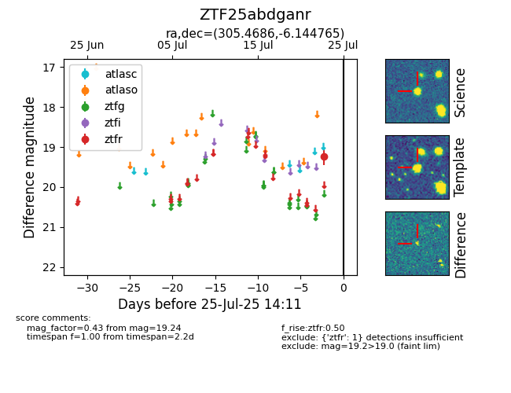

Target ZTF25abdganr at 2025-07-25 14:11, see:
FINK: fink-portal.org/ZTF25abdganr
Lasair: lasair-ztf.lsst.ac.uk/objects/ZTF25abdganr
ALeRCE: alerce.online/object/ZTF25abdganr
alt names
ZTF25abdganr (ztf,fink)
coordinates:
equatorial (ra, dec) = (305.4686,-6.14476)
galactic (l, b) = (37.8530,-22.89184)
photometry
last ztfr=19.24
1 ztfr detections
